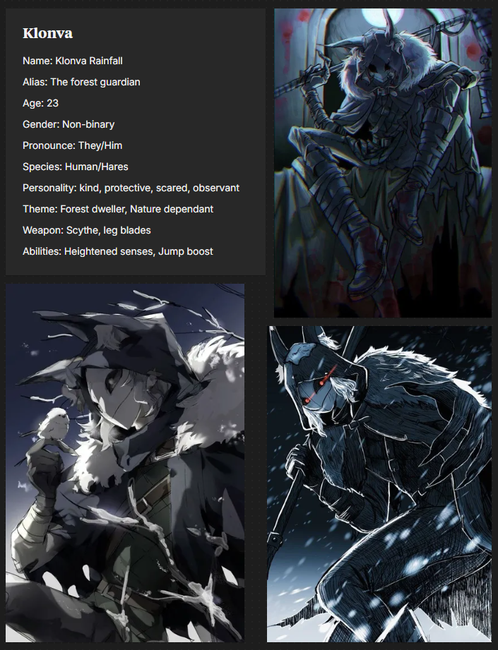

I'm Aika, a 16-year-old student at Haugaland VGS in Norway, studying Information Technology and Media Production.
I'm interested in technology, programming, cybersecurity, gaming, modding, content creation, storytelling, worldbuilding and drawing.
I enjoy experimenting with computers and software, learning how things work, and finding ways to create my own projects.
I have an interest in game development, but have recently gotten into app creation and web design.
Gaming is a big part of my interests.
Some of my favourite games and franchises
are Minecraft, Pokemon, Five Nights at Freddy's, The Legend of Zelda and Call of Duty.
I especially enjoy modding games and creating detailed builds and environments.
I'm also interested in anime and animation. Some of my favourites are Horimiya, One Piece and Arcane.
I particularly enjoy character-driven stories and worldbuilding.
Creatively, I enjoy coming up with original characters, developing fictional worlds, writing stories
and exploring different systems of existing stories.
I also enjoy streaming and creating gaming-related content.
I have a particular interest in Japanese aesthetics, architecture, gardens and nature.
I like gothic fairytale themes, darker aesthetics and combining technology with creative design.
I'm someone who values independence, freedom, creativity and helping others.
I enjoy learning new things, solving problems and having projects that let me express myself.
* I use Visual Studio Code for coding. * I'm interested in cybersecurity and the DedSec aesthetic from Watch Dogs. * I enjoy Minecraft modpacks and large-scale building projects. * I have experience with Unreal Engine 5. * I enjoy VR gaming. * I speak both Norwegian and English. * I'm interested in streaming without necessarily showing my face.
Bellow is one of many characters i have made
